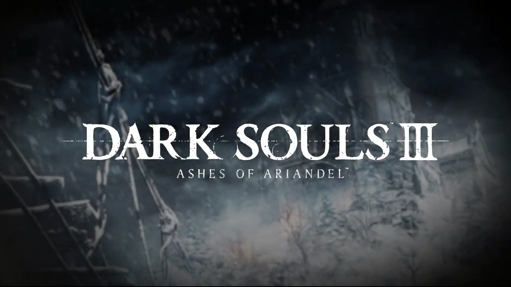
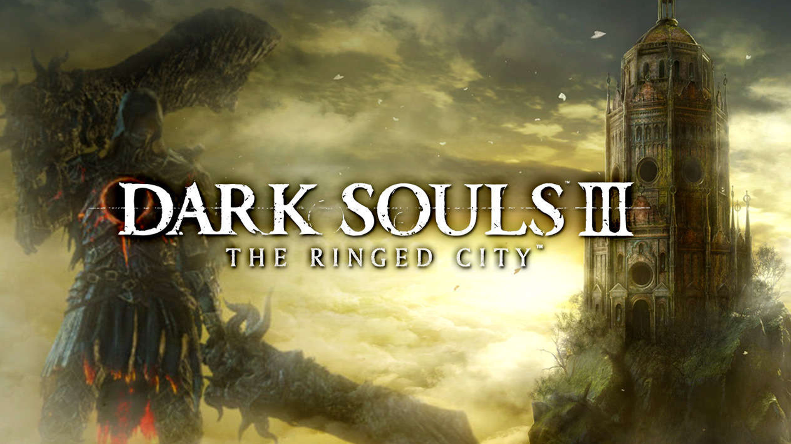
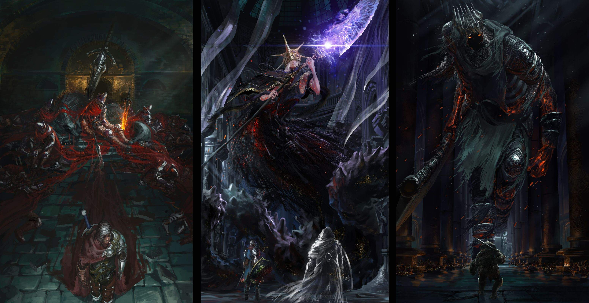

Это Ost из игры для атмосферы
Навигация:
Добро пожаловать в мир
"Dark Souls 3"
Игровой процесс
 Так же как и её предшественница – Dark Souls II, игра выполнена в жанре action RPG в сеттинге средневековья и тёмного фэнтези. Мир разбит на несколько десятков подземелий, замков и прочих лабиринтов, наполненных разнообразными опасными монстрами и боссами. Здесь Вам предстоит прокачать своего персонажа, найти новое оружие, броню и магию.
Так же как и её предшественница – Dark Souls II, игра выполнена в жанре action RPG в сеттинге средневековья и тёмного фэнтези. Мир разбит на несколько десятков подземелий, замков и прочих лабиринтов, наполненных разнообразными опасными монстрами и боссами. Здесь Вам предстоит прокачать своего персонажа, найти новое оружие, броню и магию.
Одной из ключевых механик является смерть персонажа. Поскольку здесь нет опций создания сохранений, при смерти Вы будете перемещены к последнему чекпоинту, часть убитых врагов воскреснет и возникнет риск потери неиcпользованного опыта.
Другие характерные особенности у игры – это сетевые опции, где игроки могут непосредственно помогать, либо мешать друг другу в прохождении.
Разработка
Слухи о выходе игры появились за несколько недель до выставки "E3 2015", которые сопровождались утечками скриншотов и прочей информации. Официально анонс состоялся 15 июня на конференции Microsoft, в рамках которой был показан CGI-ролик.
Разработка началась в середине 2013 года, перед релизом Dark Souls II, созданием которой занимались Томохиро Сибуя и Юи Танимура, вместо создателя серии Хидетака Миядзаки. Игра разрабатывалась параллельно с Bloodborne, но занимались ими две совершенно разные команды. Позже Миядзаки вернулся к разработке Dark Souls III, в то время как Исаму Окано и Юи Танимура заняли посты со-руководителей проекта. Вопреки первоначальным ожиданиям Миядзаки в том, что у серии не будет множества продолжений, Dark Souls III являет собой четвёртую часть серии Souls. Миядзаки позже добавил, что игра не будет последней в серии, а наоборот послужит «переломным моментом» в развитии обоих франчайзов и самой компании FromSoftware, так как это была последняя её разработка перед тем, как Миядзаки стал президентом.
По словам Миядзаки, ограничения в ходе разработки Bloodborne вынудили его вернуться к серии Souls. Также он отметил, что "игровые враги и дизайн уровней были спроектированы для умерщвления игроков, однако, они могут быть использованы и для получения преимущества". Дизайн игры был сосредоточен вокруг пепла и угля, рассеянного по миру, создавая картину увядающей красоты.
Дата выхода — 24 марта 2016 года в Японии и 12 апреля 2016 года в остальном мире на PS4, Xbox One и PC.
Дополнения

Первое дополнение Ashes of Ariandel (рус. Прах Арианделя) было анонсировано 25-го августа 2016 года и вышло 25-го октября этого же года на PC, Xbox One и PS4. Оно включает новые локации, противников, оружие и боссов.

Второе и заключительное дополнение The Ringed City (рус. Город за стеной) было анонсировано 23 января 2017-го года. Дата выхода — 28 марта 2017-го года на PC, Xbox One и PS4.
Также, издатель BANDAI NAMCO Entertainment Europe анонсировал издание DARK SOULS™ III THE FIRE FADES™ EDITION (Game of the Year Edition), которое вышло 21-го апреля 2017 года на PS4, Xbox One и PC. Оно включает в себя оригинальную игру Dark Souls III, а также оба дополнения — Ashes of Ariandel и The Ringed City.
Сюжет

И в самом деле. Замок, что зовётся Лотриком, стоит там, где сходятся земли Повелителей пепла. Покоряя север, пилигримы убеждаются, что старые сказания не лгут. "Огонь затухает, и повелители пепла покидают свои троны"
Когда огонь под угрозой, когда звонит колокол, Повелители пепла поднимаются из своих могил. Олдрик, святой покровитель глубин. Легион нежити Фаррона, Хранители Бездны. И мрачный правитель из осквернённой столицы - гигант Йорм.
Но в действительности... Повелители оставят свои троны, и негорящие восстанут. Безымянная, проклятая нежить, недостойная стать пеплом. И стало так. Негорящие всегда ищут угли.